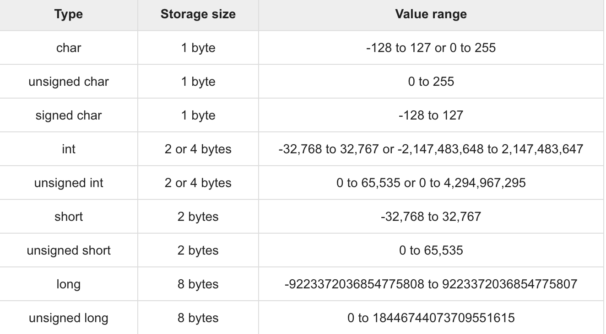

C Öğreticisi 3 (Veri Tipleri)
Bu yazılar https://www.tutorialspoint.com/cprogramming/ adresindeki yazı dizilerinin çevirileridir.
C’deki veri tipleri, farklı tiplerdeki değişkenleri veya fonksiyonları bildirmek için kullanılan kapsamlı bir sistemi ifade eder.
Bir değişkenin türü, hafızada ne kadar yer kaplayacağını ve depolanan bit deseninin nasıl yorumlandığını belirler.
Tipler C’de aşağıdaki gibi sınıflandırılabilir -
1-Basit Tipler
Bunlar aritmetik türlerdir ve ayrıca: (a) tamsayı tipleri ve (b) kayan nokta tipleri olarak sınıflandırılırlar.
2-Numaralandırılmış Tipler
Yine aritmetik tiplerdir ve program boyunca yalnızca belirli tam sayı değerlerini atayabilecek değişkenleri tanımlamak için kullanılırlar.
3-Void Tipi
Void belirteci hiçbir değerin olmadığını gösterir.
4-Türetilmiş Tipler
Bunlar: (a) İşaretçi(pointer) tipleri, (b) Dizi(array) tipleri, © Yapı(struct) tipleri, (d) Birlik(union) tipleri ve (e) Fonks,yon tipleri.
Dizi tipleri ve yapı tipleri toplu olarak toplu tipler olarak ifade edilir. Bir işlevin tipi, işlevin dönüş değerinin tipini belirtir. Gelecek bölümlerde diğer tiplerin ele alınacağı aşağıdaki temel türleri göreceğiz.
Tamsayı(Integer) Tipleri
Aşağıdaki tabloda, depolama boyutları(storage size) ve değer aralıklarıyla(value range) standart tamsayı türlerinin ayrıntıları verilmektedir-
Belirli bir platformda bir türün veya değişkenin tam boyutunu elde etmek için, sizeof operatörünü kullanabilirsiniz. Sizeof (type) ifadesi, nesnenin saklama boyutunu ya da byte cinsinden yazıyı verir.
Aşağıda limits.h başlık dosyasında farklı sınırlarda farklı bir makine kullanarak bir makinede çeşitli türlerin boyutlarını almak için bir örnek verilmiştir.
#include
#include
#include
#include
int main(int argc, char** argv) {
printf(“CHAR_BIT : %d\n”, CHAR_BIT);
printf(“CHAR_MAX : %d\n”, CHAR_MAX);
printf(“CHAR_MIN : %d\n”, CHAR_MIN);
printf(“INT_MAX : %d\n”, INT_MAX);
printf(“INT_MIN : %d\n”, INT_MIN);
printf(“LONG_MAX : %ld\n”, (long) LONG_MAX);
printf(“LONG_MIN : %ld\n”, (long) LONG_MIN);
printf(“SCHAR_MAX : %d\n”, SCHAR_MAX);
printf(“SCHAR_MIN : %d\n”, SCHAR_MIN);
printf(“SHRT_MAX : %d\n”, SHRT_MAX);
printf(“SHRT_MIN : %d\n”, SHRT_MIN);
printf(“UCHAR_MAX : %d\n”, UCHAR_MAX);
printf(“UINT_MAX : %u\n”, (unsigned int) UINT_MAX);
printf(“ULONG_MAX : %lu\n”, (unsigned long) ULONG_MAX);
printf(“USHRT_MAX : %d\n”, (unsigned short) USHRT_MAX);
return 0;
}
Yukarıdaki programı derleyip çalıştırdığınızda, Linux’ta aşağıdaki sonucu verir -
CHAR_BIT : 8
CHAR_MAX : 127
CHAR_MIN : -128
INT_MAX : 2147483647
INT_MIN : -2147483648
LONG_MAX : 9223372036854775807
LONG_MIN : -9223372036854775808
SCHAR_MAX : 127
SCHAR_MIN : -128
SHRT_MAX : 32767
SHRT_MIN : -32768
UCHAR_MAX : 255
UINT_MAX : 4294967295
ULONG_MAX : 18446744073709551615
USHRT_MAX : 65535
Kayan Nokta Tipleri
Aşağıdaki tablo, depolama boyutları ve değer aralıklarıyla standart kayan nokta türlerinin ayrıntılarını ve bunların hassasiyetini sağlar -
float.h başlık dosyası, bu değerleri ve programlarınızdaki gerçek sayıların ikili gösterimi hakkındaki diğer ayrıntıları kullanmanıza izin veren makroları tanımlar. Aşağıdaki örnek kayan nokta tipiyle çekilen depolama alanını ve değer aralığını yazdırrır -
#include
#include
#include
#include
int main(int argc, char** argv) {
printf(“Storage size for float : %d \n”, sizeof(float));
printf(“FLT_MAX : %g\n”, (float) FLT_MAX);
printf(“FLT_MIN : %g\n”, (float) FLT_MIN);
printf(“-FLT_MAX : %g\n”, (float) -FLT_MAX);
printf(“-FLT_MIN : %g\n”, (float) -FLT_MIN);
printf(“DBL_MAX : %g\n”, (double) DBL_MAX);
printf(“DBL_MIN : %g\n”, (double) DBL_MIN);
printf(“-DBL_MAX : %g\n”, (double) -DBL_MAX);
printf(“Precision value: %d\n”, FLT_DIG );
return 0;
}
Yukarıdaki programı derleyip çalıştırdığınızda, Linux’ta aşağıdaki sonucu verir -
Storage size for float : 4
FLT_MAX : 3.40282e+38
FLT_MIN : 1.17549e-38
-FLT_MAX : -3.40282e+38
-FLT_MIN : -1.17549e-38
DBL_MAX : 1.79769e+308
DBL_MIN : 2.22507e-308
-DBL_MAX : -1.79769e+308
Precision value: 6
Void Tipi
Void tipi, hiçbir değerin mevcut olmadığını belirtir. Üç çeşit durumda kullanılır -
1-Fonksiyon void olarak döner
C de herhangi bir değer döndürmeyen çeşitli fonksiyonlar var ya da bunların boşa döndüğünü söyleyebilirsiniz. Dönüş değeri olmayan bir fonksiyonun dönüş tipi void’dir. Örneğin, void exit (int status);
2-Void olarak fonksiyon argümanları
C’de herhangi bir parametre kabul etmeyen çeşitli fonksiyonlar vardır. Parametresiz bir fonksiyon void’i kabul edebilir. Örneğin, int rand (void);
3-Void olarak İşaretçiler(pointer)
Void * türünde bir işaretçi, bir nesnenin adresini gösterir, tipini değil. Örneğin, bir bellek ayırma işlevi void * malloc (size_t size); Herhangi bir veri türüne atılabilecek boşluğa bir işaretçi döndürür.
https://www.tutorialspoint.com/cprogramming/c_data_types.htm